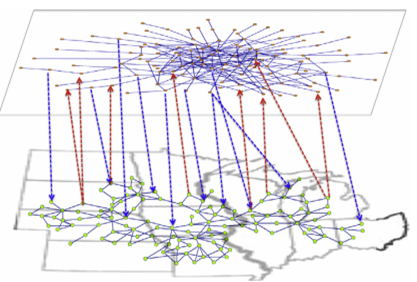
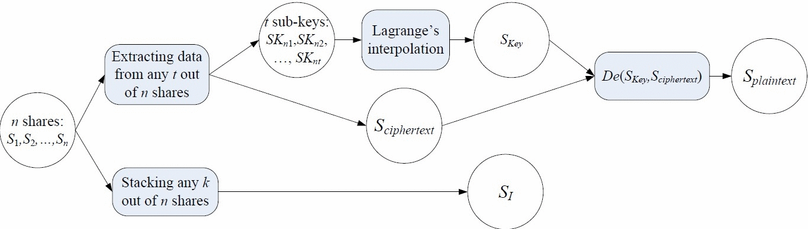
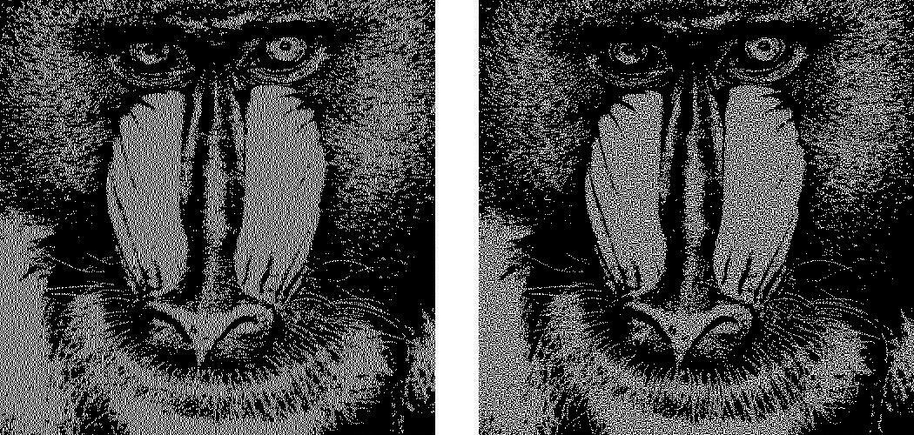
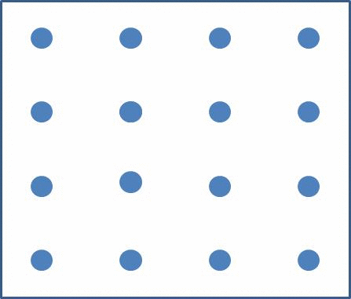
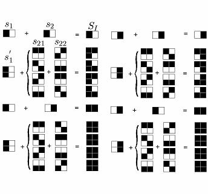
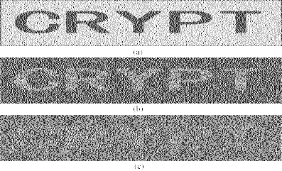
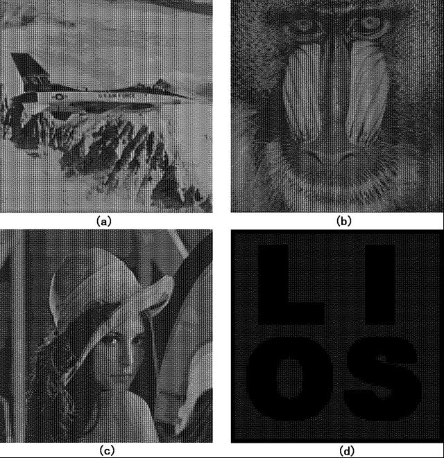
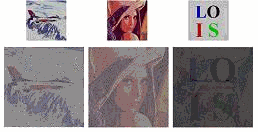
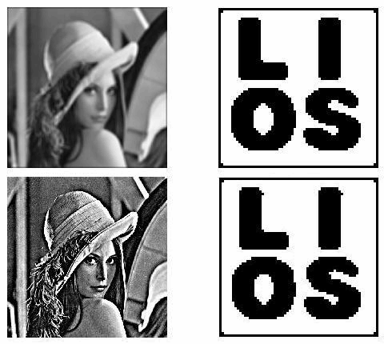
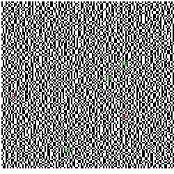

| |
|
 |
Optimizing interconnections to maximize the spectral radius of
interdependent networks
The spectral radius (i.e., the largest eigenvalue) of the adjacency
matrices of complex networks is an important quantity that governs the
behavior of many dynamic processes on the networks, such as
synchronization and epidemics. Studies in the literature focused on
bounding this quantity. In this paper, we investigate how to maximize
the spectral radius of interdependent networks by optimally
linking k internetwork connections (or interconnections for short). We
derive formulas for the estimation of the spectral radius of
interdependent networks and employ these results to develop a suite of
algorithms that are applicable to different parameter regimes. In
particular, a simple algorithm is to link the k nodes with the
largest k eigenvector centralities in one network to the node in the
other network with a certain property related to both networks. We
demonstrate the applicability of our algorithms via extensive
simulations. We discuss the physical implications of the results,
including how the optimal interconnections can more effectively decrease
the threshold of epidemic spreading in the
susceptible-infected-susceptible model and the threshold of
synchronization of coupled Kuramoto oscillators. |
|
 |
A Secret Enriched Visual Cryptography
Visual Cryptography (VC) is a powerful technique that combines the
notions of perfect ciphers and secret sharing in cryptography with that
of raster graphics. A binary image can be divided into shares that are
able to be stacked together so as to approximately recover the original
image. VC is a unique technique in the sense that the encrypted message
can be decrypted directly by the Human Visual System (HVS). The
distinguishing characteristic of VC is the ability of secret restoration
without the use of computation. However because of restrictions of the
HVS, pixel expansion and alignment problems, a VC scheme perhaps can
only be applied to share a small size of secret image. In this paper, we
propose a general method to let the VC shares carry more secrets, the
technique is to use cypher output of private-key systems as the input
random numbers of VC scheme, meanwhile the encryption key could be
shared, the shared keys could be associated with the VC shares. After
this operation, VC scheme and secret sharing scheme are merged with the
private-key system. Under this design, we implement a $(k,t,n)$-VC
scheme. Compared to those existing schemes, our approach could greatly
enhance the ability of current VC schemes and could cope with pretty
rich secrets. |
|
 |
Improving the Visual Quality of Size
Invariant Visual Cryptography Scheme
In order to reduce the pixel expansion of Visual Cryptography Scheme
(VCS), many size invariant visual cryptography schemes (SIVCS's) were
proposed. However, most of the known SIVCS's have bad visual quality and
thin line problems, hence the known SIVCS's are only suitable to encrypt
coarse secret images. In this paper, we notice that the variance of the
darkness levels of the pixels also reflects the visual quality of the
recovered secret image, as well as the average contrast. We verify,
analytically and experimentally, the effectiveness of the variance to be
a criterion for evaluating the visual quality of the recovered secret
image. Furthermore, we propose two multi-pixel encryption size invariant
visual cryptography schemes (ME-SIVCS's) which improve the visual
quality of the recovered secret image by reducing the variance of the
darkness levels. In addition, the proposed ME-SIVCS's can be used to
encrypt fine secret images since they avoid some known thin line
problems. Experimental results and comparisons are also given to show
the effectiveness of the proposed ME-SIVCS's. Finally, we give
suggestions on obtaining good visual quality for the recovered secret
image. |
|
 |
Flexible Visual Cryptography Scheme Without
Distortion
For visual cryptography scheme (VCS), normally, the
size of the recovered secret image will be expanded by $m(\geq 1)$ times
of the original secret image. In most cases, m is not a square number,
hence the recovered secret image will be distorted. Sometimes, $m$ is
too large that will bring much inconvenience to the participants to
carry the share images. In this paper, we propose a visual cryptography
scheme which simulated the principle of fountains. The proposed scheme
has two advantages: non-distortion and flexible (with respect to the
pixel expansion). Furthermore, the proposed scheme can be applied to any
VCS that is under the pixel by pixel encryption model, such as VCS for
general access structure, color VCS and extended VCS, and our VCS does
not restrict to any specific underlying operation. Compared with other
non-distortion schemes, the proposed scheme is more general and simpler,
real flexible and has competitive visual quality for the recovered
secret image. |
|
 |
Step Construction of Visual Cryptography Schemes
Two common drawbacks of visual cryptography scheme (VCS) are the large
pixel expansion of each share image and the small contrast of the
recovered secret image. In this paper, we propose a step construction to
construct VCS_OR and VCS_XOR for general access structure by applying
(2,2)-VCS recursively, where a participant may receive multiple share
images. Furthermore, the proposed step construction generates VCS_OR and
VCSX_OR which have optimal pixel expansion and contrast for each
qualified set in the general access structure in most cases, and most
importantly our scheme applies a technique to simplify the access
structure, which can reduce the average pixel expansion (APE) in most
cases compared with the results in the literature. Finally, we give the
experimental results and comparisons to show the effectiveness of the
proposed scheme.
|
|
 |
The Alignment Problem of Visual Cryptography
Schemes
Pixel expansion
is an important parameter for Visual Cryptography Schemes (VCS).
However, most papers in the literature are dedicated to reduce pixel
expansion on the pixel level, i.e. to reduce the number of subpixels
that represent a pixel in the original secret image. It is quite
insufficient since the final size of the transparencies of the VCS is
affected not only by the number of the subpixels, but also by the size
of the subpixels in the transparencies. However, reducing the size of
the subpixels in the transparencies results in difficulties of alignment
of the transparencies. In this paper, we consider the alignment problem
in VCS, and prove that in order to visually recover the original secret
image, it is not necessary to align the transparencies precisely. This
study is restricted to the case when only one transparency is shifted.
|
|
 |
Embedded Extended Visual Cryptography Schemes
Visual cryptography scheme (VCS) is a kind of secret
sharing scheme which allows the encoding of a secret image into n shares
that distributed to n participants. The beauty of such scheme is that a
set of qualified participants is able to recover the secret image
without any cryptographic knowledge and computation devices. Extended
visual cryptography scheme (EVCS) is a kind of VCS which consists of
meaningful shares (compared to the random shares of traditional VCS). In
this paper, we propose a construction of EVCS which is realized by
embedding random shares into meaningful covering shares, and we call it
the embedded extended visual cryptography scheme (embedded EVCS).
Experimental results compare some of the well-known EVCS's proposed in
recent years systematically, and show that the proposed embedded EVCS
has competitive visual quality compared with many of the well-known
EVCS's in the literature. Besides, it has many specific advantages
against these well-known EVCS's respectively. |
|

|
Colour Visual Cryptography Schemes Visual Cryptography Scheme
(VCS) is a kind of secret sharing scheme which allows the encryption of
a secret image into n shares that distributed to n participants. The
beauty of such scheme is that, the decryption of the secret image
requires neither cryptography knowledge nor complex computation. The
color visual cryptography becomes an interesting research after the
formal introduction of visual cryptography by Naor and Shamir in 1995.
In this paper, we propose a color (k,n)-VCS under the visual
cryptography model of Naor and Shamir with no pixel expansion, and a
color (k,n)-extended visual cryptography scheme ((k,n)-EVCS) under the
visual cryptography model of Naor and Shamir with pixel expansion the
same as that of its corresponding black and white (k,n)-EVCS.
Furthermore, we propose a black and white (k,n)-VCS and a black and
white (k,n)-EVCS under the visual cryptography model of Tuyls, and based
on the black and white schemes we propose a color (k,n)-VCS and a color
(k,n)-EVCS under the same visual cryptography model, and their pixel
expansions are the same as that of their corresponding black and white (k,n)-VCS
and (k,n)-EVCS respectively. We also gives the experimental results of
the proposed schemes, and we compare the proposed scheme with the known
schemes in the literature. |
|
 |
A
Robust Visual Cryptography Based Watermarking Scheme for Multiple Cover
Images and Multiple Owners
Watermarking is a technique to protect the copyright
of digital media such as image, text, music and movie. In this paper, a
robust watermarking scheme for multiple cover images and multiple owners
is proposed. The proposed scheme makes use of the visual cryptography
technique, transform domain technique, chaos technique, noise reduction
technique and error correcting code technique where the visual
cryptography technique provides the capability to protect the copyright
of multiple cover images for multiple owners, and the rest techniques
are applied to enhance the robustness of the scheme.
|
|
 |
Cheating Immune Visual Cryptography Scheme
Most cheating immune visual cryptography schemes (CIVCS) are
based on a traditional visual cryptography scheme (VCS), and are
designed to avoid cheating when the secret image of the original VCS is
to be recovered. However all the known CIVCS have some drawbacks. Most
usual drawbacks include the following: Either the scheme needs an online
trusted authority, or it requires additional shares for the purpose of
verification, or it has to sacrifice the properties by means of pixel
expansion and contrast reduction of the original VCS, or it can only be
based on such VCS with specific access structures. In this paper, we
propose a new CIVCS that can be based on any VCS, including those with a
general access structure, and show that our CIVCS can avoid all the
above drawbacks. Moreover, our CIVCS does not care about
wether the underlying operation is OR or XOR. |
|
|